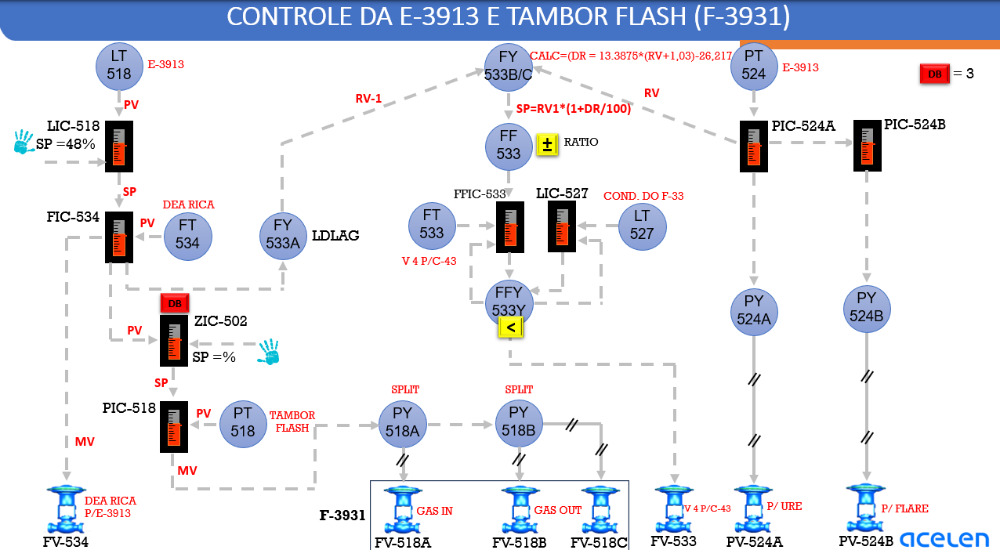
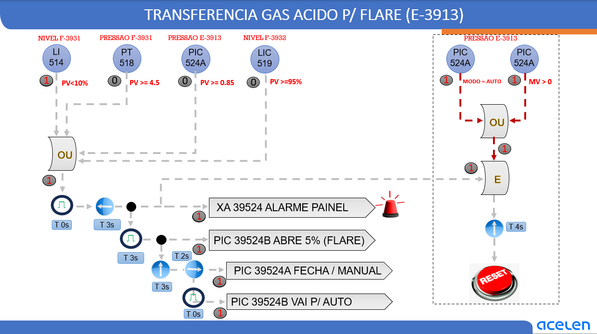

Fluxograma vivo
Linhas animadas, instrumentos e válvulas ativosEsquema didático animado — a topologia simplifica a disposição física. Clique nos instrumentos ou nos ícones ? para conhecer a função.

Estude a estratégia completa de nível, vazão e pressão. Altere perturbações, acompanhe a correção de cada malha, identifique qual controlador tem autoridade sobre a válvula e aprenda a reconhecer estabilidade e perda de controle.
Selecione um conjunto para estudar a lógica e acessar os instrumentos correspondentes.
Movimente as variáveis, aplique distúrbios e observe a resposta dos instrumentos. Clique nas lâmpadas sobre o fluxograma para abrir a explicação técnica.

Carregue um cenário e examine as tendências e os sinais selecionados.
Escolha um cenário ou ajuste diretamente qualquer variável.
Informe as quatro variáveis de processo, acompanhe as comparações, os estados lógicos, os temporizadores e os comandos enviados aos controladores.
O disparo inicial utiliza uma porta OU: basta que uma das quatro condições seja verdadeira. Depois há uma sequência temporal de alarme e ações nos controladores de envio de gás. A recuperação exige avaliação separada do circuito de reset.
Sem condições de disparo.
Unidades de pressão não informadas no desenho: os valores 4,5 e 0,85 são tratados exclusivamente nas escalas indicadas, sem convertê-los em bar ou kgf/cm².
*Condição adicional conservadora no simulador. O sinal esquerdo da porta E no diagrama de reset exige conferência; não é seguro assumir que o reset pode acontecer enquanto persiste a causa.
O reset da simulação não executa abertura física da rota URE nem fechamento da rota flare. O rearme apenas retorna o estado didático ao monitoramento.
O módulo mantém a imagem de origem como referência e documenta individualmente as comparações, o encadeamento das ações e as limitações da interpretação.

Abrir imagem original em tamanho completo ↗A porta OU recebe LI-514 < 10%, PT-518 ≥ 4,5, PIC-524A PV ≥ 0,85 e LIC-519 PV ≥ 95%. Apenas uma entrada verdadeira é suficiente para produzir demanda de transferência. As unidades das pressões não estão explicitadas na imagem; as comparações são numéricas na escala do desenho.
Os ramos levam à identificação do alarme XA-39524, à solicitação de abertura inicial de 5% pelo PIC-39524B para o flare, ao comando de fechamento e passagem para manual do PIC-39524A e à passagem do PIC-39524B para automático. Os símbolos T0, T3, T2 e T4 aparecem como temporizações. Para permitir a simulação, adotou-se a leitura didática 3 s → alarme; +3 s → 5% flare; +3 s +2 s → fechamento/manual A; +0 s → AUTO B. Os tempos são editáveis no código e não foram validados contra o programa lógico real.
O ramo da direita apresenta uma porta OU com as entradas PIC-524A MODO = AUTO e PIC-524A MV > 0, ligada a uma porta E e a um bloco de 4 segundos antes do RESET. A outra entrada da porta E não está inequivocamente definida pela representação fornecida. Neste treinamento, o reset só fica disponível com todas as causas falsas e uma condição de retorno verdadeira, estáveis por 4 segundos. O botão RESET exige confirmação manual. Essa regra de segurança é uma hipótese de simulação, não uma afirmação da lógica real.
A porta OU é combinacional: se qualquer comparação for verdadeira, seu resultado é 1. Para fins pedagógicos, o simulador exige permanência por 3 segundos antes de registrar o disparo e cancela a pré-temporização se todas as causas cessarem antes desse tempo. Após a atuação do alarme, a sequência fica retida, mesmo se as entradas normalizarem, até as condições de rearme. Esse comportamento de retenção precisa ser confirmado na lógica real — a imagem por si só não prova o uso de uma trava.
O desenho indica primeiro um comando de 5% para o caminho de flare, seguido de fechamento/manual do controlador da rota anterior e passagem do controlador de flare para AUTO. Essa ordem evita representar uma remoção instantânea de toda a capacidade de escoamento antes da disponibilidade do destino alternativo. Entretanto, a capacidade hidráulica, os permissivos reais, os tempos das válvulas e a pressão do coletor de flare não estão disponíveis. Uma ordem gráfica de comandos não garante pressão estável nem abertura física efetiva.
A saída lógica “PIC-39524B abre 5%” é uma referência/comando de controlador; sua tradução em posição física da PV-524B depende de modo, intertravamentos adicionais, ar de instrumento, posicionador, pressões diferenciais e integridade mecânica. O mesmo vale para PIC-39524A “fecha/manual”. O laboratório demonstra o comando esperado no encadeamento, não resposta instrumentada da planta.
Analise em conjunto: qual PV ultrapassou seu limiar, momento da primeira comparação verdadeira, evolução da porta OU, estado do alarme, estágio da sequência, saída comandada ao flare, modo do PIC-524A, condição do PIC-524B e elegibilidade de reset. Instrumentos com indicação falsa podem gerar disparos espúrios ou mascarar condições reais; a simulação não modela qualidade de sinal, redundância, SIS, falha segura, permissivas de campo, pressão do flare nem atuação de alívios mecânicos.
Confirmar: unidades e escalas de PT-518/PIC-524A; origem do LI-514; identificação PIC-524A/B versus PIC-39524A/B; funções exatas dos blocos com setas e bordas temporais; semântica dos tempos T0/T2/T3/T4; existência de latch/selagem; ligação exata da porta E no reset; comportamento da lógica diante de pulsos curtos; retorno ao modo AUTO após reset; regras para válvulas e bloqueios em falha.
As lâmpadas abrem o respectivo painel técnico e fecham o anterior. Clique no título para voltar ao laboratório.
LT-518 mede o nível da E-3913. O LIC-518, com SP representado de 48%, corrige a referência do FIC-534. O FT-534 mede a vazão; o FIC comanda a FV-534. A cascata permite corrigir perturbações hidráulicas antes que se manifestem como grande desvio de nível.
ZIC-502 recebe um sinal associado à posição de controle da FV-534 e envia referência ao PIC-518. O PT-518 mede pressão do F-3931. Os PY-518A/B distribuem a atuação: FV-518A para admissão de gás; FV-518B/C para retirada. O intuito didático é preservar ΔP na FV-534 e pressão do flash.
FY-533A aplica lead-lag ao sinal da alimentação. FY-533B/C calcula DR a partir de RV, e a referência RV1 é multiplicada pelo fator (1 + DR/100). O FF-533 contribui para o SP do FFIC-533, cujo FT-533 mede a corrente V4.
LT-527 mede nível do inventário de condensado identificado no desenho. LIC-527 e FFIC-533 alimentam FFY-533Y, marcado com “<”. O menor sinal é encaminhado à FV-533. A função de retorno pode fornecer tracking ao controlador não selecionado.
O PT-524 alimenta o controle de pressão de topo. A PV-524A atua na corrente para URE e a PV-524B na corrente para flare. O desenho apresenta DB = 3 entre os controladores; a unidade, ação exata e hierarquia devem ser verificadas na configuração real.
Todos os capítulos permanecem disponíveis nesta mesma página. A leitura detalha medição, objetivo, sinal, ação, compensação, interação, falhas e interpretação operacional.
A malha mantém o inventário de líquido da E-3913 em uma faixa operacional adequada pela modulação da vazão de DEA rica encaminhada à torre. O LT-518 mede o nível; o LIC-518 compara esse nível com o setpoint indicado no desenho, de 48%; e o FIC-534 recebe a referência produzida pelo controlador principal. O FT-534 mede a vazão real de DEA rica e a FV-534 é o elemento final de controle da alimentação. O controle de nível não depende de um comando direto do LIC à válvula: é uma estratégia de controle em cascata, com malha principal de nível e malha secundária de vazão.
A PV do LT-518 chega ao LIC-518. O controlador principal calcula a correção necessária a partir do erro entre SP e PV e fornece uma referência remota ao FIC-534. O FT-534 fornece a vazão real ao controlador secundário. O FIC-534 calcula sua saída para a FV-534, cuja modulação modifica a vazão de DEA rica. Para que a cascata funcione, o FIC-534 deve estar em condição apropriada de controle remoto/cascata e sua malha precisa responder mais rapidamente que a malha de nível.
Se o nível cair abaixo de 48%, a resposta física esperada é o aumento da alimentação. O LT identifica a queda, o LIC corrige a referência do FIC, o FIC aumenta a solicitação de vazão e a FV-534 abre o necessário, observada a ação de controle. O nível tende a se recuperar quando a entrada de líquido supera temporariamente a retirada. Se o controlador comandar maior abertura, mas a vazão não aumentar, deve-se investigar disponibilidade de pressão diferencial, restrições, resposta da válvula, indicação do FT e eventuais desvios por bypass.
Quando o nível sobe, a malha tende a reduzir a vazão de alimentação. O LIC reduz o SP de vazão, o FIC reduz a solicitação de passagem pela FV-534 e o menor ingresso de DEA rica permite que a retirada diminua o inventário. A atuação deve respeitar limites de vazão, requisitos do processo e a disponibilidade dos equipamentos. Uma redução rápida demais ou uma sintonia excessivamente agressiva pode gerar oscilação de inventário e alimentação.
Uma perturbação hidráulica, como redução da pressão de alimentação, pode reduzir a vazão antes de provocar mudança relevante no nível. O FIC percebe imediatamente essa alteração e atua na FV-534, evitando que o LIC precise corrigir integralmente a perturbação de vazão. O controlador secundário melhora a rejeição de perturbações rápidas e o principal trata a dinâmica mais lenta de inventário. Isso exige sintonia hierárquica, limites e proteção contra saturação da ação integral.
O ZIC-502 recebe como PV um sinal associado à saída do FIC-534. Possui referência operacional percentual e encaminha um SP ao PIC-518. Esse arranjo é compatível com controle de posição de válvula (VPC) usado para coordenar a pressão do tambor flash com a capacidade hidráulica da FV-534. O bloco identificado como DB incorpora uma banda morta. O diagrama não apresenta o valor do SP percentual, o tamanho dessa banda ou os ganhos do ZIC, nem permite afirmar a direção exata de todas as ações sem consultar sua configuração.
Para líquido em uma válvula de controle convencional, dentro de condições não cavitantes e sem correções adicionais, uma relação simplificada é Q ∝ Cv(abertura) × √(ΔP/SG). A mesma vazão pode ser obtida com aberturas diferentes quando o diferencial de pressão muda. Se a pressão no F-3931 integrar a pressão a montante efetiva da FV-534, sua redução tende a reduzir a capacidade de escoamento e faz o FIC solicitar maior abertura. Seu aumento tende a elevar a capacidade, permitindo menor abertura. É necessário considerar elevação, perdas de carga, pressão a jusante e as propriedades da DEA rica.
Na hipótese funcional utilizada no simulador, se a FV-534 exige abertura acima da referência configurada, o ZIC eleva lentamente a referência de pressão do PIC-518. Com isso, o controle do F-3931 pode recuperar diferencial de pressão na FV-534 e permitir ao FIC manter a vazão com margem de abertura. Se a válvula opera muito fechada, o ajuste em sentido inverso pode reduzir a pressão e recuperar margem de modulação. Essas ações só são possíveis dentro dos limites operacionais de pressão e das possibilidades de admissão/retirada de gás.
A banda morta impede que pequenas flutuações de saída do FIC-534 provoquem alterações contínuas no setpoint de pressão do PIC-518. Ela também reduz o risco de uma malha rápida de vazão e uma malha lenta de posição entrarem em competição. O ZIC deve ser deliberadamente mais lento que a malha de pressão e que a malha de vazão, para que a correção seja suave e não gere instabilidade.
Se a FV-534 estiver travada, com bypass aberto, com sinal de posição incorreto ou com insuficiência de pressão de alimentação, o ZIC pode não conseguir recuperar a posição esperada. Alterar a pressão do tambor sem resolver a origem da anomalia pode deslocar o sistema para os limites de operação. Um sinal de saída do controlador não é necessariamente uma medição independente da abertura física da válvula: confirmar no SDCD a origem da PV do ZIC.
O tambor flash precisa de pressão adequada ao processo de separação de fases e à disponibilidade de diferencial hidráulico para transferência de DEA rica. O PT-518 mede essa pressão e envia a PV ao PIC-518. O setpoint está associado à saída do ZIC-502. O PIC produz uma saída de controle que passa pelos blocos PY-518A e PY-518B, identificados como SPLIT. Esses blocos comandam as rotas de admissão e retirada de gás.
O desenho identifica a FV-518A como GAS IN. Quando o processo necessita aumentar pressão, o acionamento da admissão de gás tende a elevar a quantidade de gás no espaço de vapor e recuperar a PV medida pelo PT-518. A atuação está condicionada à pressão da fonte de gás, à capacidade da válvula, à composição do gás e às condições de processo. Uma solicitação de abertura sem aumento efetivo de pressão pode indicar indisponibilidade da fonte, restrição de linha ou vazamento/retirada superior à admissão.
A FV-518B e a FV-518C estão associadas à saída de gás (GAS OUT). Quando a pressão excede o SP, a estratégia split-range pode aumentar a retirada e reduzir a pressão. A atuação de B e C pode ser simultânea, sequencial ou em faixas distintas. O desenho, isoladamente, não especifica as curvas de cada bloco PY; portanto, não se deve inferir a sequência real de abertura somente pelos símbolos. No laboratório foi adotada, para fins didáticos, uma atuação escalonada B e depois C.
Split-range é a divisão de uma mesma demanda de controle entre elementos finais distintos. Aqui, a necessidade de aumentar pressão é atendida por gás de entrada, e a necessidade de reduzir pressão por gás de saída. O arranjo evita a necessidade de dois controladores independentes competindo pela mesma PV, desde que seus intervalos de operação, sentido de ação e transições sejam corretamente definidos.
Com queda de pressão, o PIC-518 demanda mais admissão. Com elevação, demanda mais retirada. Quando a pressão está próxima do SP, a exigência de correção diminui. O controlador também enfrenta perturbações associadas à geração ou remoção de gás no tambor, à temperatura e à variação de fluxo de líquido. O tempo de recuperação depende do volume de gás, da compressibilidade, da pressão da fonte/destino e da capacidade das válvulas.
Se a pressão do flash influenciar o diferencial de pressão na FV-534, alterações no PIC-518 repercutem no FIC-534. O FIC compensa a vazão enquanto houver margem disponível. Se a FV-534 chegar ao limite, a cascata deixa de conseguir manter a vazão desejada; se o ZIC continuar tentando corrigir, ele também pode aproximar a pressão de seus limites. Intertravamentos, sistemas de proteção e limites de projeto permanecem prioritários. A simulação não emula essas salvaguardas.
O desenho mostra uma conexão do FIC-534 ao FY-533A, com identificação LDLAG. O bloco FY-533A fornece o sinal RV-1 para o conjunto FY-533B/C, que também recebe outro sinal identificado como RV, associado ao caminho de controle do PIC-524A. A lógica efetua um cálculo matemático e utiliza o resultado para formar o setpoint da vazão V4 destinada ao C-43, conforme indicação do diagrama. O FF-533 mostra a função RATIO e a saída alimenta o FFIC-533.
Lead-lag é um compensador dinâmico que altera a relação temporal entre entrada e saída. Uma representação clássica é G(s) = K × (Tlead × s + 1)/(Tlag × s + 1). Conforme os parâmetros, pode antecipar parte da resposta ou suavizar a informação. Em sistemas de controle de processo, isso permite aproximar dinamicamente a referência de uma corrente ao comportamento de outra, considerando atrasos de transporte, retenções e diferenças de velocidade de resposta. Não se conhece, pelo desenho, o ganho ou as constantes de tempo reais do FY-533A.
DR representa uma correção percentual calculada a partir de RV. RV1 representa a referência obtida a partir do caminho de RV-1. O valor resultante ajusta o setpoint de vazão. DR de +5% multiplica RV1 por 1,05; DR de −5% multiplica por 0,95; e DR de zero conserva a referência RV1. O desenho não indica explicitamente todas as unidades e escalas desses sinais. Não se deve associar RV necessariamente a PV, OP ou uma variável física específica do PIC-524A sem a configuração da lógica.
O sinal tratado da alimentação permite modificar a referência V4 antecipadamente quando a condição de carga muda. O FT-533 fornece a vazão efetiva ao FFIC-533, que compara PV e SP e produz uma saída corretiva. Dessa forma, o cálculo de razão antecipa necessidades operacionais e o feedback corrige desvios reais de vazão. Essa combinação é especialmente relevante quando mudanças de carga provocam efeitos que não devem esperar o aparecimento de grande erro na PV de V4.
O FFIC-533 não comanda sozinho a FV-533. Sua saída participa de um seletor de mínima juntamente com o LIC-527. Um controlador de vazão perfeitamente ajustado pode exibir desvio entre SP e PV quando outra malha detém autoridade sobre a válvula. O diagnóstico correto exige verificar o FFY-533Y e a condição do LT-527, além do FIC, FT e FV.
O LT-527 mede o nível identificado no desenho como condensado do F-33, transmitindo sua PV ao LIC-527. O FFIC-533 calcula uma demanda de válvula em função da vazão. A saída do LIC-527 e a saída do FFIC-533 chegam ao FFY-533Y, representado pelo símbolo “<”. O menor sinal numérico é selecionado para a cadeia de comando da FV-533: MVselecionada = min(MV_FFIC533, MV_LIC527).
Quando a necessidade de controle de inventário não exige limitar a retirada, o LIC-527 pode manter sua saída acima da demanda do FFIC-533. O seletor então prioriza o FFIC e a vazão segue a referência calculada pelo conjunto FY/FF. O comportamento depende da ação de cada controlador e da relação entre sinal de comando e posição da válvula.
Na hipótese convencional em que um menor sinal representa menor abertura da FV-533, a queda do nível leva o LIC-527 a reduzir sua demanda. Ao ficar menor que a saída do FFIC-533, essa demanda é escolhida pelo FFY-533Y. A válvula restringe a retirada e o inventário tende a recuperar-se. Essa prioridade transforma a malha de nível em proteção operacional do volume, sem exigir que o FFIC pare de calcular sua necessidade de vazão.
Um seletor de mínima protege prioritariamente a condição que demande menor saída de controle; não equivale automaticamente a uma proteção simétrica para níveis alto e baixo. Se o nível subir e o LIC pedir saída maior do que o FFIC, o seletor pode continuar escolhendo o FFIC, sem acelerar a retirada. É preciso consultar a configuração de ação, posição de falha, seleção e saturações antes de afirmar o comportamento completo da malha.
O desenho apresenta conexões de retorno entre o seletor e os controladores. Elas são compatíveis com estratégias de acompanhamento de saída selecionada (tracking) e proteção contra saturação integral. Quando um controlador perde autoridade, sua integral pode continuar acumulando erro e produzir uma grande solicitação sem efeito real. Ao recuperar autoridade, isso causaria resposta brusca. O tracking permite que o controlador não selecionado acompanhe a saída efetiva, suavizando a transferência. A função exata de cada linha de retorno deve ser confirmada no SDCD.
Quando a FV-533 não acompanha o SP do FFIC-533, verificar primeiro: PV do FT-533; saída calculada do FFIC; saída do LIC-527; qual controlador está selecionado pelo FFY; posição/realimentação da válvula; disponibilidade de diferencial de pressão; estado manual/automático; e confiabilidade da medição de nível. Não concluir defeito da válvula apenas pela diferença entre SP e PV da vazão.
O PT-524 mede a pressão da E-3913. O PIC-524A atua por meio do PY-524A e da PV-524A, identificada como rota para a URE. O PIC-524B atua por meio do PY-524B e da PV-524B, identificada como rota para flare. O desenho mostra ligação entre PIC-524A e PIC-524B e indicação de DB = 3. Trata-se de um arranjo compatível com coordenação do encaminhamento de gás, permitindo controlar pressão e utilizar uma rota alternativa conforme condições e configuração real.
Em uma estratégia convencional, a elevação da pressão faz o controlador aumentar a capacidade de retirada para URE. Se a pressão cair, a capacidade pode ser reduzida. A resposta real depende da pressão a jusante, das propriedades da corrente, da disponibilidade de URE e da ação de cada válvula. Uma grande abertura comandada não assegura a vazão esperada se a linha estiver restrita ou com contrapressão elevada.
Uma rota de flare pode ser utilizada quando a demanda de retirada supera a capacidade da rota normal, de acordo com o projeto e os procedimentos autorizados. No simulador, uma banda didática mantém o flare fechado para desvios menores e eleva sua demanda sob pressão elevada. Isso é uma hipótese ilustrativa, não a confirmação da estratégia real de transição ou da natureza de proteção da PV-524B. A válvula de controle para flare não deve ser confundida com sistemas independentes de alívio/intertravamento.
A notação DB indica deadband ou diferencial entre ações. A sua finalidade típica é evitar disputa de controladores, comutação excessiva e abertura desnecessária da rota alternativa em pequenas flutuações. O valor 3 está desenhado, mas sua unidade e posição precisa na lógica não são especificadas. Portanto, a simulação usa três pontos de índice de pressão somente como demonstração.
Se PT-524 subir apesar de maior solicitação à PV-524A, avaliar a vazão disponível para URE, contrapressão, falha de posicionamento e geração de gás. Se a PV-524B for solicitada, avaliar a coerência com a condição operacional e disponibilidade da rota. Não substituir procedimentos formais de emergência por uma interpretação didática de fluxograma.
Uma queda do diferencial da FV-534 provoca redução inicial de vazão, seguida de maior solicitação de abertura pelo FIC-534. O ZIC-502 pode detectar essa aproximação de saturação e alterar a referência do PIC-518. A pressão do F-3931 se modifica por meio das válvulas de gás, afetando novamente o diferencial de pressão da FV-534. Esse ciclo precisa ter velocidade de correção bem hierarquizada para que pressão e vazão não entrem em oscilação. Se houver bypass hidráulico ou posicionamento incorreto, o relacionamento entre abertura comandada e capacidade real pode deixar de ser confiável.
Uma mudança de vazão na malha FIC-534 aparece como sinal para o FY-533A, que aplica tratamento lead-lag antes do cálculo de compensação. O FY-533B/C combina a variável RV com RV1 e calcula DR. O FF-533 ajusta a referência do FFIC-533. Assim, a referência da V4 se altera para acompanhar condições operacionais sem depender somente da diferença entre SP e PV de V4.
O desenho liga o sinal RV ao caminho do PIC-524A, criando interação entre a malha de pressão e a compensação da corrente V4. Entretanto, para compreender a direção e a intensidade reais dessa interação é indispensável identificar se RV é PV, saída, variável transformada ou outra grandeza. O laboratório usa um mapeamento didático da demanda de retirada para URE apenas para demonstrar a aritmética da equação exibida.
Mesmo com SP de V4 aumentado por feedforward, o seletor de mínima poderá impedir o aumento efetivo da vazão quando o LIC-527 solicitar restrição. A PV do FFIC-533 pode ficar persistentemente abaixo do SP não por falha de sintonia, mas porque outra malha controla a válvula. O tracking do controlador não selecionado contribui para evitar uma retomada agressiva quando a restrição terminar.
Controle de pressão e controle de vazão estão acoplados pelas perdas hidráulicas do sistema. Uma mesma abertura de válvula não representa vazão fixa em todas as condições. Diferenças de pressão, densidade, cavitação e restrições influenciam a vazão. Para diagnóstico de CIC, correlacionar pressões, vazões e sinais reais de atuação em vez de interpretar apenas a posição de uma válvula.
| Ocorrência | Resposta esperada / diagnóstico | Verificação adicional |
|---|---|---|
| Nível da E-3913 diminui | LIC-518 tende a elevar o SP remoto do FIC-534 | Conferir PT e condição hidráulica da FV-534 |
| Nível da E-3913 aumenta | LIC-518 tende a reduzir a alimentação | Conferir retirada, PV e confiabilidade LT-518 |
| FIC-534 abre mais sem aumento de vazão | Possível limitação de ΔP, restrição ou falha | Pressões, bypass, FT, válvula e posicionador |
| Pressão do F-3931 cai | Split-range pode solicitar FV-518A GAS IN | Fonte de gás e resposta do PT-518 |
| Pressão do F-3931 sobe | Split-range pode solicitar saída FV-518B/C | Destino de gás e curvas PY-518A/B |
| FFIC-533 não acompanha o SP | LIC-527 pode ter assumido via low selector | FFY-533Y, nível LT-527 e tracking |
| Nível LT-527 cai | LIC-527 pode restringir FV-533 | Inventário, alimentação e ação do seletor |
| Pressão da E-3913 sobe | PIC-524A tende a demandar mais retirada | Capacidade e contrapressão da URE |
| PV-524B passa a atuar | Condição de maior pressão ou lógica alternativa | DB, permissivos e condições para flare |
| Oscilações de pressão e vazão correlacionadas | Possível interação FIC-534/ZIC-502/PIC-518 | Comparar velocidades, saturações e tendência dos SPs |
Uma queda de pressão disponível reduz a vazão inicial. O FIC-534 amplia sua solicitação de abertura para sustentar a vazão de DEA rica. O ZIC pode detectar posição acima da referência e ajustar gradualmente o SP do PIC-518. O split-range do F-3931 então busca recuperar a pressão. O FIC-534 volta a corrigir a vazão em função do novo diferencial. Paralelamente, a mudança da alimentação é tratada pelo FY-533A e pode atualizar o SP da V4. A capacidade de ajuste da V4 dependerá de qual sinal o FFY-533Y seleciona.
Começar pela variável que mudou primeiro e seguir a cadeia: PV de processo, saída do controlador, SP de cascata, posicionamento efetivo, mudança em ΔP, reação da segunda malha e eventual seleção/limitação. Comparar a ordem temporal dos movimentos evita confundir ação corretiva normal com causa inicial da anomalia.
Um controlador pode estar funcionando matematicamente de forma correta e produzir uma ação operacional inadequada se sua PV estiver errada. Em operação da E-3913, indicações não confiáveis de nível exigem validação por outras grandezas de processo, observando procedimentos internos. Não se deve confiar cegamente na resposta do controlador quando a medição principal está comprometida.
Quando parte da vazão passa por um bypass, a válvula deixa de exercer controle exclusivo sobre a corrente. A relação entre abertura, vazão e posição esperada se altera. A ação do FIC pode ficar limitada e uma estratégia de posicionamento como a representada pelo ZIC-502 pode perder correspondência com a condição hidráulica real. A disponibilidade de vazão efetiva precisa ser avaliada por balanços e instrumentos confiáveis.
Se o FT indicar valor congelado, o controlador poderá acreditar que a vazão permaneceu constante quando houve perturbação. Se a FV estiver travada, a saída do FIC muda sem efeito correspondente no processo, podendo levar à saturação. No laboratório, essas duas falhas podem ser reproduzidas separadamente, destacando a diferença entre saída comandada e resposta física.
Contrapressão ou limitação de retirada para a URE podem elevar a pressão da E-3913. A atuação da rota para flare depende de lógica específica e condições seguras de processo. A demonstração interativa mostra apenas o comportamento conceitual da coordenação PIC-524A/B e não deve ser utilizada como roteiro de decisão em emergência.
O simulador adota modelos concentrados e simplificados, com níveis em %, vazões normalizadas e pressões como índices. Não modela equilíbrio termodinâmico rigoroso de flash, transferência de massa DEA/H₂S, hidrodinâmica real da torre, vapor, válvulas com curvas características reais, limites de projeto, intertravamentos, LOPA/SIS ou condições específicas de operação da U-39. A ausência desses fenômenos é intencional para destacar a estrutura de controle.
| Malha | PV controlada / referência | Elemento final / função |
|---|---|---|
| LIC-518 / FIC-534 | Nível E-3913 / vazão DEA rica | FV-534 · cascata de alimentação |
| ZIC-502 | Sinal de posição associado à FV-534 | SP de PIC-518 · coordenação hidráulica |
| PIC-518 | Pressão F-3931 | FV-518A/B/C · GAS IN / GAS OUT |
| FY-533A | Sinal da alimentação | Compensação dinâmica lead-lag |
| FY-533B/C e FF-533 | RV / RV1 / DR | Referência calculada FFIC-533 |
| FFIC-533 | Vazão V4 | Demanda de controle ao FFY-533Y |
| LIC-527 | Nível de condensado LT-527 | Demanda alternativa ao FFY-533Y |
| FFY-533Y | Menor saída de FFIC e LIC | Seleção de comando FV-533 |
| PIC-524A/B | Pressão E-3913 | PV-524A URE / PV-524B flare |
O objetivo integrado da estratégia é preservar o inventário da E-3913, coordenar a pressão e a transferência de DEA rica a partir do F-3931, acompanhar dinamicamente a referência de vazão V4, proteger o inventário medido pelo LT-527 e controlar a pressão de topo com encaminhamento apropriado de gás. Nenhuma malha deve ser julgada somente por sua PV: é essencial identificar qual controlador está no comando, qual referência está ativa, como a válvula responde e qual perturbação precedeu o desvio.
Questões de diagnóstico, causa e efeito, priorização de sinais e interpretação de malhas. Alternativas plausíveis e ordem embaralhada a cada reinício.
.